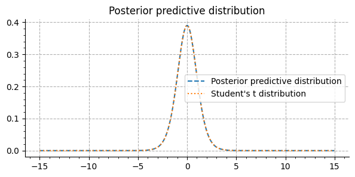
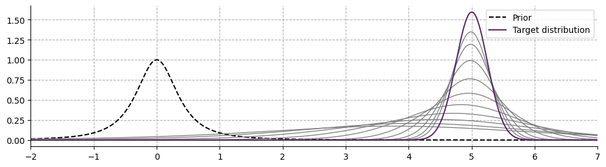
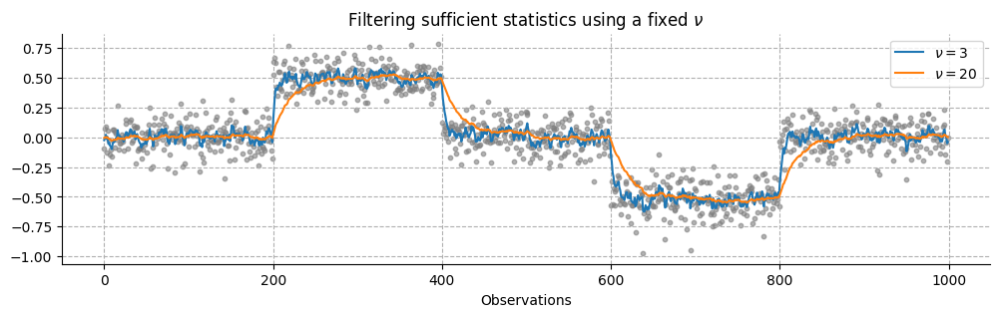
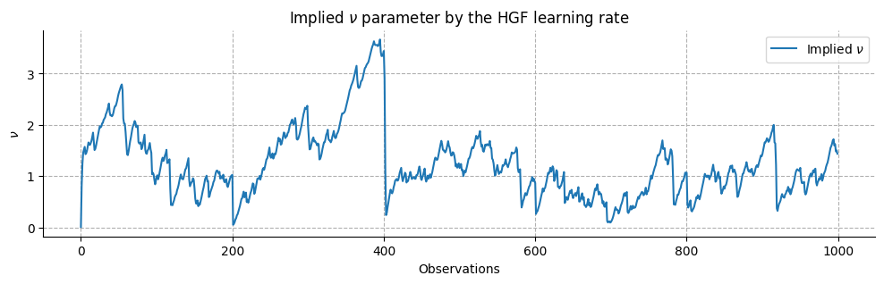
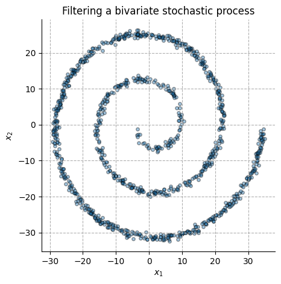
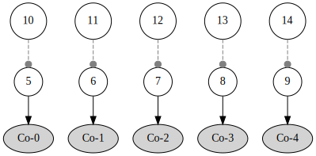
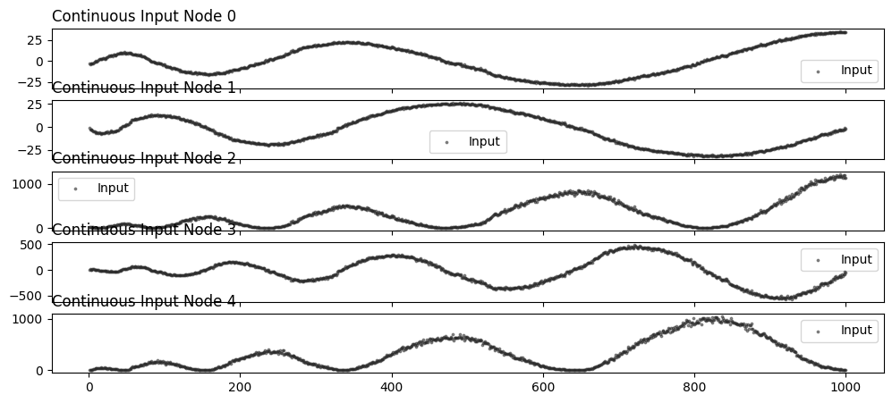
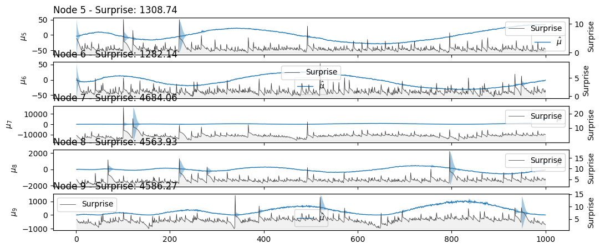
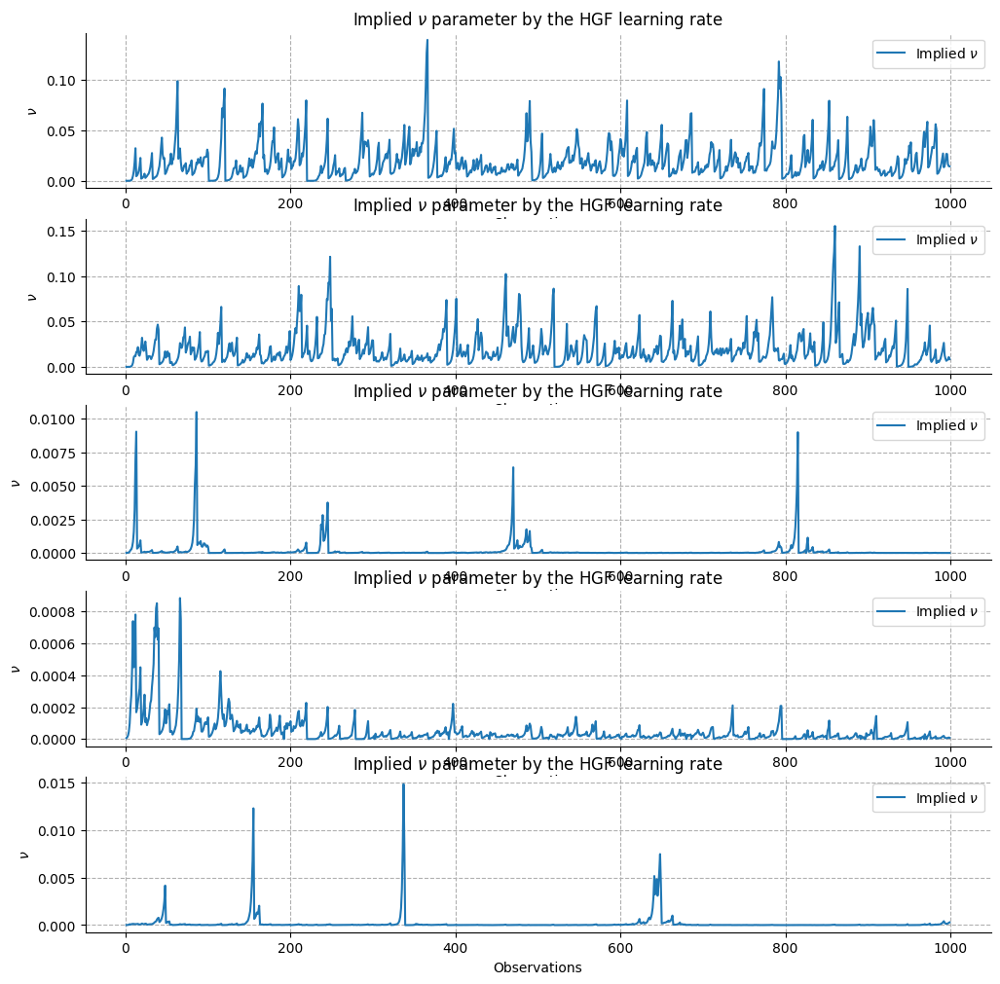
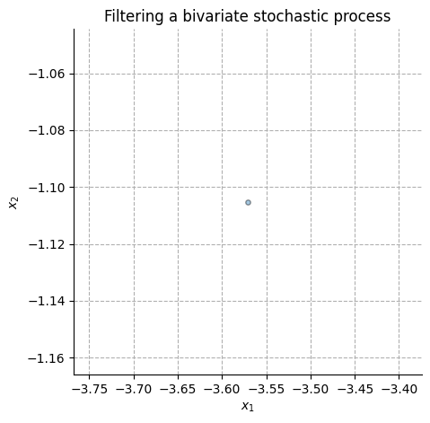

Generalised Bayesian Filtering#
import matplotlib.pyplot as plt
import numpy as np
import jax.numpy as jnp
import seaborn as sns
from scipy.stats import norm, t
from scipy.special import gammaln
from matplotlib.ticker import MultipleLocator
from pyhgf.networks import beliefs_propagation
from pyhgf.math import SufficientStatistics
import jax.numpy as jnp
from pyhgf.model import HGF
np.random.seed(123)
Here, using the approach described in [Mathys and Weber, 2020]we demonstrate how the Hierarchical Gaussian Filter can be generalized to any probability distribution that belongs to the exponential family. Exponential families of probability distributions are those which can be written in the form:
\[
p(x|\nu) = f_x(\nu) := h(x) exp(\eta(\nu) · t(x) − b(\nu))
\]
where:
\(x\) is a vector-valued observation
\(\nu\) is a parameter vector
\(h(x)\) is a normalization constant
\(\eta(\nu)\) is the natural parameter vector
\(t(x)\) is the sufficient statistic vector
\(b(\nu)\) is a scalar function
x = np.arange(-15, 15, .01)
def gaussian_predictive_distribution(x, xi, nu):
return (
np.sqrt(1/(np.pi * (nu + 1) * (xi[1] - xi[0]**2)))
* np.exp((gammaln((nu+2) / 2) - gammaln((nu + 1) / 2))) # use gammaln to avoid numerical overflow
* (1 + ((x-xi[0])**2) / ((nu + 1)*(xi[1]-xi[0]**2)))**(-(nu+2)/2)
)
Show code cell source
_, ax = plt.subplots(figsize=(7, 3))
ax.plot(
x,
gaussian_predictive_distribution(x, xi=np.array([0, 1]), nu=10),
linestyle="--",
label="Posterior predictive distribution"
)
ax.plot(
x,
t.pdf(x, 11),
linestyle=":",
label="Student's t distribution"
)
ax.xaxis.set_minor_locator(MultipleLocator(1))
ax.yaxis.set_minor_locator(MultipleLocator(.02))
ax.set_title("Posterior predictive distribution")
ax.legend()
ax.grid(linestyle="--");
sns.despine()

Filtering of Sufficient Statistics for Stationary Input Distributions#
xs = np.random.normal(5, 1/4, 1000) # inputs
# initial parameters
xi = np.array([0, 1/8])
nu = 1
Show code cell source
plt.figure(figsize=(12, 3))
plt.plot(
x,
gaussian_predictive_distribution(x, xi=xi, nu=nu),
color="k",
label="Prior",
linestyle="--"
);
for i, x_i in enumerate(xs):
xi = xi + (1/(1+nu)) * (SufficientStatistics.normal(x_i) - xi)
nu += 1
if i in [2, 4, 8, 16, 32, 64, 128, 256, 512, 999]:
plt.plot(
x,
gaussian_predictive_distribution(x, xi=xi, nu=nu),
color="grey",
linewidth=1.0
);
plt.plot(
x,
norm.pdf(x, loc=5.0, scale=1/4),
color="#582766",
label="Target distribution"
);
plt.xlim(-2, 7)
plt.legend()
plt.grid(linestyle="--");
sns.despine()

Filtering of Sufficient Statistics for Non-stationary Input Distributions#
Using a fixed \(\nu\)#
x = np.arange(0, 1000)
# create noisy input time series
xs = np.random.normal(0, 1/8, 1000)
xs[200:400] += .5
xs[600:800] -= .5
# initialize nu at different values
nu_1, nu_2 = 3, 20
xi_1, xi_2 = np.array([0, 1/8]), np.array([0, 1/8])
xis = []
for i, x_i in enumerate(xs):
xi_1 = xi_1 + (1/(1+nu_1)) * (SufficientStatistics.normal(x_i) - xi_1)
xi_2 = xi_2 + (1/(1+nu_2)) * (SufficientStatistics.normal(x_i) - xi_2)
xis.append((xi_1, xi_2))
xis = np.asarray(xis)
Show code cell source
_, ax = plt.subplots(figsize=(12, 3))
ax.scatter(x, xs, color="grey", alpha=.6, s=10);
ax.plot(x, xis[:, 0, 0], label=rf"$\nu = {nu_1}$")
ax.plot(x, xis[:, 1, 0], label=rf"$\nu = {nu_2}$")
ax.grid(linestyle="--");
ax.set_title(r"Filtering sufficient statistics using a fixed $\nu$")
ax.set_xlabel("Observations")
ax.legend()
sns.despine()

Filtering \(\nu\) with Hierarchical Gaussian Filter#
general_filter_hgf = (
HGF(model_type=None)
.add_nodes(kind="continuous-input", node_parameters={"input_precision": 100})
.add_nodes(value_children=0, node_parameters={"tonic_volatility": -6.0})
.add_nodes(volatility_children=[1], node_parameters={"mean": 0, "tonic_volatility": -2})
)
Initializing a network with custom node structure.
general_filter_hgf.set_update_sequence()
attributes = general_filter_hgf.attributes
nus = []
for i, x_i in enumerate(xs):
mean = attributes[1]["mean"]
attributes, _ = beliefs_propagation(
edges=general_filter_hgf.edges,
attributes=attributes,
input_data=(x_i, [1.0], 1.0),
input_nodes_idx=general_filter_hgf.input_nodes_idx.idx,
update_sequence=general_filter_hgf.update_sequence,
)
new_mean = attributes[1]["mean"]
nus.append(((x_i - mean) / (new_mean - mean)) - 1)
_, ax = plt.subplots(figsize=(12, 3))
ax.plot(x, nus, label=rf"Implied $\nu$")
ax.grid(linestyle="--");
ax.set_title(r"Implied $\nu$ parameter by the HGF learning rate")
ax.set_ylabel(r"$\nu$")
ax.set_xlabel("Observations")
ax.legend()
sns.despine()

Filtering a bivariate normal distribution#
# simulate a spiral data set
N = 1000
theta = np.sort(np.sqrt(np.random.rand(N)) * 5 * np.pi)
r_a = -2 * theta - np.pi
input_data = np.array([np.cos(theta)*r_a, np.sin(theta)*r_a]).T
input_data = input_data + np.random.randn(N,2) * .5
_, ax = plt.subplots(figsize=(5, 5))
ax.scatter(
input_data[:,0],
input_data[:,1],
edgecolor="k",
alpha=.4,
s=15
)
ax.grid(linestyle="--");
ax.set_title(r"Filtering a bivariate stochastic process")
ax.set_xlabel(r"$x_1$")
ax.set_ylabel(r"$x_2$")
sns.despine()

sufficient_statistics = jnp.apply_along_axis(
SufficientStatistics.multivariate_normal,
1,
input_data
)
bivariater_hgf = (
HGF(model_type=None)
.add_nodes(
kind="continuous-input",
node_parameters={"input_precision": 100.0}, n_nodes=5
)
)
for i in range(5):
bivariater_hgf.add_nodes(
value_children=i,
node_parameters={
"tonic_volatility": -2.0,
"mean": sufficient_statistics[0][i],
}
)
for i in range(5):
bivariater_hgf.add_nodes(volatility_children=[i+5], node_parameters={"mean": 10, "tonic_volatility": -2})
Initializing a network with custom node structure.
bivariater_hgf.plot_network()

bivariater_hgf.input_data(input_data=sufficient_statistics)
... Create the update sequence from the network structure.
... Create the belief propagation function.
Adding 1000 new observations.
<pyhgf.model.HGF at 0x7ffb681c01a0>
bivariater_hgf.plot_nodes(node_idxs=[0, 1, 2, 3, 4]);

bivariater_hgf.plot_nodes(node_idxs=[5, 6, 7, 8, 9]);

general_filter_hgf.set_update_sequence()
attributes = bivariater_hgf.attributes
nus = []
for i in range(input_data.shape[0]):
mean = jnp.array([attributes[i]["mean"] for i in range(5, 10)])
attributes, _ = beliefs_propagation(
edges=bivariater_hgf.edges,
attributes=attributes,
input_data=(sufficient_statistics[i], jnp.ones(5), jnp.ones(5)),
input_nodes_idx=bivariater_hgf.input_nodes_idx.idx,
update_sequence=bivariater_hgf.update_sequence,
)
new_mean = jnp.array([attributes[i]["mean"] for i in range(5, 10)])
nus.append(((sufficient_statistics[i] - mean) / (new_mean - mean)) - 1)
nus = jnp.array(nus)
((x_i - mean) / (new_mean - mean)) - 1
Array([40.976723 , -3.3879101, 19.65497 , -3.4782104, -1.9349933], dtype=float32)
_, ax = plt.subplots(figsize=(12, 12), nrows=5)
for i in range(5):
ax[i].plot(x, nus[:, i], label=rf"Implied $\nu$")
ax[i].grid(linestyle="--");
ax[i].set_title(r"Implied $\nu$ parameter by the HGF learning rate")
ax[i].set_ylabel(r"$\nu$")
ax[i].set_xlabel("Observations")
ax[i].legend()
sns.despine()

input_data
array([[-3.57073872, -1.10523832],
[-3.5931833 , -2.79141437],
[-3.27393034, -2.65010022],
...,
[33.69505426, -2.47134679],
[34.56337048, -1.21433676],
[33.71630472, -1.74720143]])
import matplotlib.animation as animation
fig, ax = plt.subplots(figsize=(5, 5))
scat = ax.scatter(
input_data[0][0],
input_data[0][1],
edgecolor="k",
alpha=.4,
s=15
)
ax.grid(linestyle="--");
ax.set_title(r"Filtering a bivariate stochastic process")
ax.set_xlabel(r"$x_1$")
ax.set_ylabel(r"$x_2$")
sns.despine()
def update(frame):
# update the scatter plot:
scat.set_offsets(input_data[:frame])
return scat
ani = animation.FuncAnimation(fig=fig, func=update, frames=100, interval=200)
plt.show()
ani.save("anim.gif")

MovieWriter ffmpeg unavailable; using Pillow instead.
System configuration#
%load_ext watermark
%watermark -n -u -v -iv -w -p pyhgf,jax,jaxlib
Last updated: Wed May 01 2024
Python implementation: CPython
Python version : 3.12.3
IPython version : 8.24.0
pyhgf : 0.0.17
jax : 0.4.26
jaxlib: 0.4.26
numpy : 1.26.0
seaborn : 0.13.2
jax : 0.4.26
matplotlib: 3.8.4
Watermark: 2.4.3